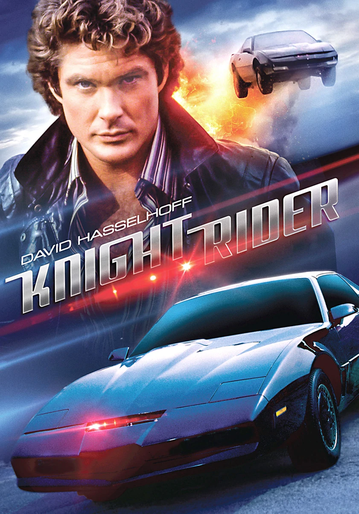

El auto fantástico (1982-1986 - 4 temporadas - 90 episodios)
Famosa serie televisiva que sigue las aventuras de Michael Knight, un detective dado por muerto al que dan una nueva cara y una nueva identidad. Su misión, encomendada por la Fundación por la Ley y el Orden: luchar contra el crimen con la ayuda de un coche artificialmente inteligente y hablador con propia personalidad.